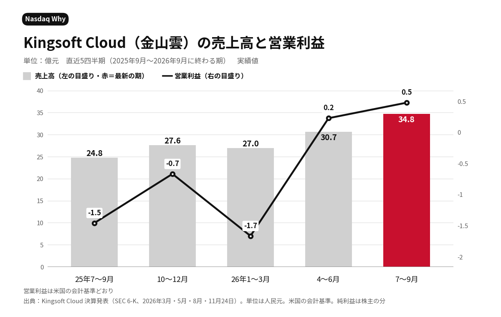
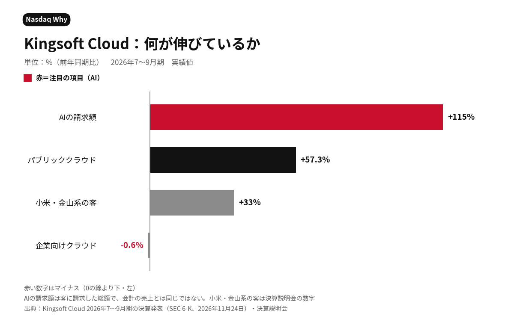
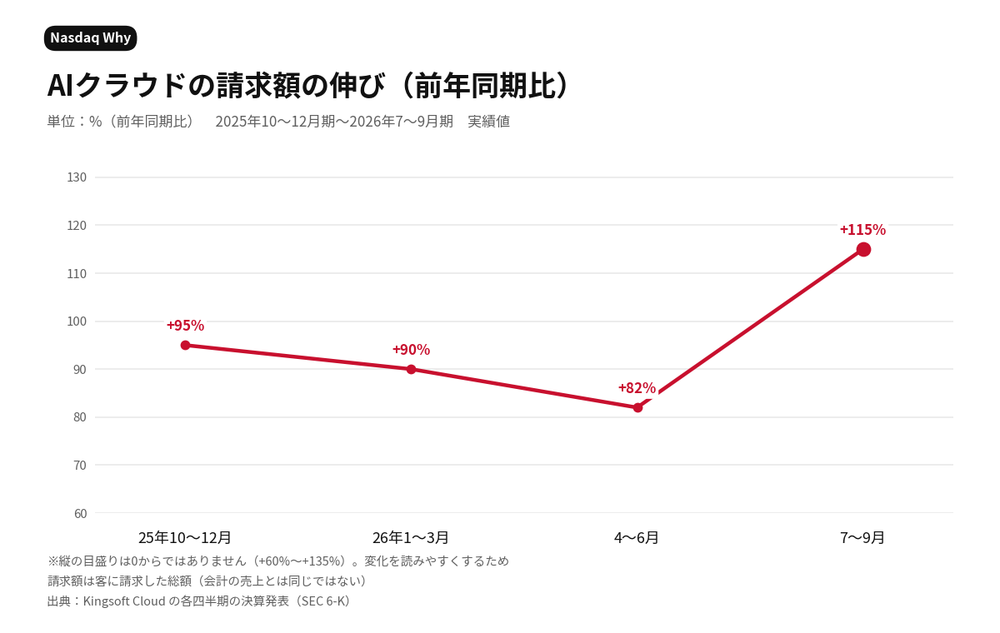
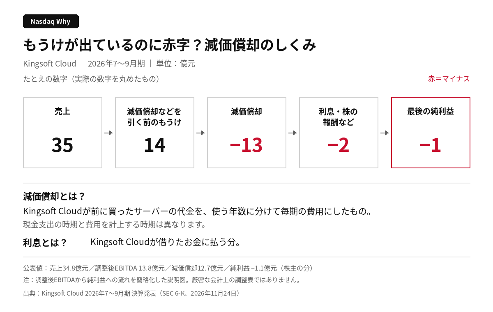
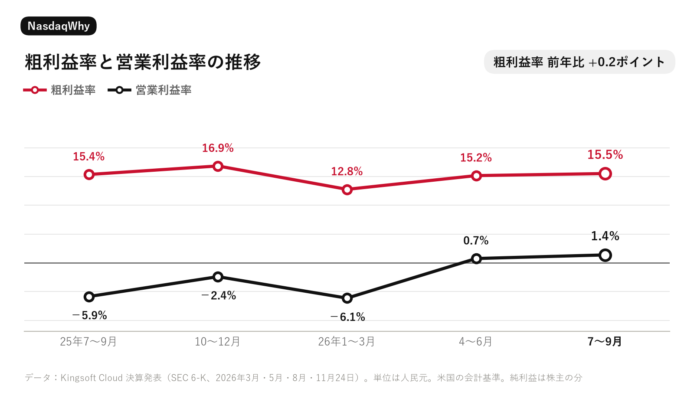
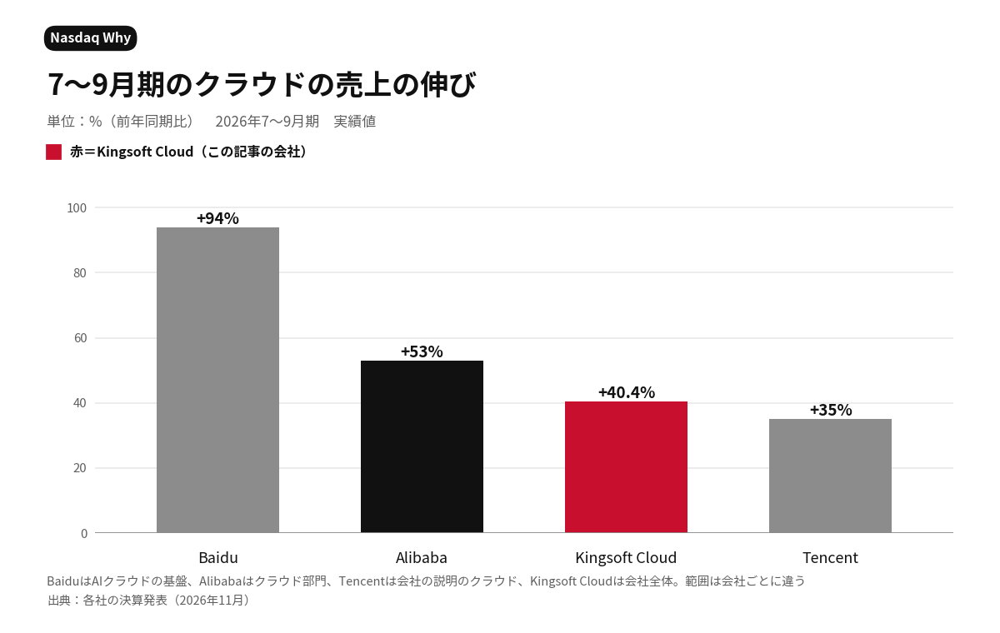
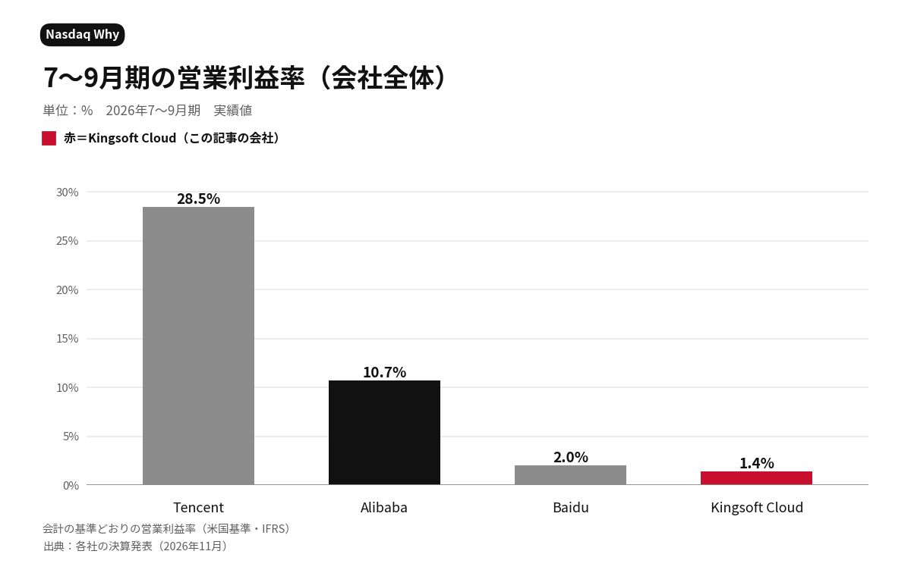

KC｜2026年7〜9月期の決算｜決算発表 2026年11月24日（米国の取引開始前）
Kingsoft Cloud（金山雲）の決算：売上は40%増なのに、なぜまだ赤字が続く？
Xiaomi（小米）の創業者の雷軍（Lei Jun）氏が会長を務める中国のクラウド会社、Kingsoft Cloud（金山雲）の7〜9月期は、売上が前年同期比40%増の34.8億元と伸びが加速した。AI向けのクラウドの請求額が2倍以上（+115%）に増えたため。営業利益（米国の会計基準どおり）は0.5億元と2四半期続けて黒字になったが、純利益（株主の分）は1.1億元の赤字だった。中国のクラウド市場は上位3社（Alibaba（阿里巴巴）約37%・Huawei（華為）約17%・Tencent（騰訊）約10%。Omdia、2025年10〜12月）が大きく、Kingsoft Cloudはネット大手の系列でない「独立系」のクラウドの大手という立ち位置。

売上は5四半期で24.8億元から34.8億元に増え、4〜6月期（+31%）より7〜9月期（+40%）のほうが伸びが速くなった。営業利益（米国の会計基準どおり）は、2026年1〜3月期の1.7億元の赤字から、4〜6月期0.2億元、7〜9月期0.5億元と2四半期続けて黒字になった。
主な数字（2026年7〜9月期）
| 今回 | 前年同期 | 前年比 | |
|---|---|---|---|
| 売上高 | 35億元 | 25億元 | +40.4% |
| 営業利益 | 0.5億元 | -1.5億元 | 黒字に転換 |
| 営業利益率 | 1.4% | -5.9% | |
| 純利益 | -1.1億元 | -0.0億元 | 赤字が拡大 |
7〜9月期の事業別の売上
| 事業 | 売上 | 前年同期比 |
|---|---|---|
| パブリッククラウド | 27.6億元 | +57.3% |
| AIの請求額 | 16.8億元 | +115.0% |
| 企業向けクラウド | 7.2億元 | -0.6% |
| 小米・金山系の客 | 9.2億元 | +33.0% |
事業別に見ると：伸びているのはAI
伸びを引っぱっているのはAIだ。AIクラウドの請求額は+115%、パブリッククラウドの売上は+57%。Xiaomi（小米）・Kingsoft（金山軟件）のグループ会社からの売上も+33%の9.2億元と伸びた。
一方、政府や銀行などの企業向けクラウドは−0.6%と横ばい。会社の伸びはAI向けのパブリッククラウドが中心になっている。

AIの請求額の伸びは再び加速
AIクラウドの請求額の伸びは、2025年10〜12月の+95%から、+90%、+82%と少しずつ落ちていたが、7〜9月期は+115%と再び加速した。パブリッククラウドの売上に占めるAIの割合は、1年前の45%から61%になった。

会社の見通し
| 数字の見通し | 出していない |
|---|---|
| 来年の目標 | 調整後で黒字 |
| 今年の設備投資 | 約150億元 |
- 会社は、売上や利益の数字の見通しを出していない。
- 最高財務責任者のYi Li氏は「来年は調整後の純利益を黒字にするのが社内の目標」と話した。
- 今年の設備投資は、基本の計画の約150億元に近づいている（1〜9月で約147億元）。今後の投資は「客の注文をもとに慎重に計画する」（鄒濤（Zou Tao）CEO）。
減価償却とは？もうけが出ているのに赤字のしくみ
Kingsoft CloudはAI向けのサーバーを大量に買っている。サーバーの代金は、買ったときに一度に費用にせず、使える年数（数年）に分けて少しずつ費用にする。これを「減価償却」という。現金を払う時期と、費用として利益から引く時期は別になる。
たとえの数字（実際の数字を丸めたもの。単位は億元）で見ると：売上35のうち、人件費や電気代などを引いた「減価償却などを引く前のもうけ」は14。そこから減価償却13と、借りたお金の利息・株の報酬など2を引くと、最後は約1の赤字になる。
正確な数字は、売上34.8億元、調整後EBITDA 13.8億元、減価償却12.7億元（1年前は6.9億元）、純利益（株主の分）−1.1億元。サーバーをたくさん買うほど、しばらくは減価償却が増えて利益を押し下げる。会社は、売上がそれ以上に増えれば、来年は調整後の純利益を黒字にできると見ている。

もうけの力

中国のクラウド・ネット大手と比べると
期間：どの会社も2026年7〜9月。売上と利益率は会社全体（利益率は会計の基準どおりの営業利益率）。各社の決算発表から。
| 会社 | 売上高 | 前年比 | 利益率 |
|---|---|---|---|
| Kingsoft Cloud | 34.8億元 | +40% | 1.4% |
| Alibaba | 2,715億元 | +10% | 11% |
| Tencent | 2,073億元 | +8% | 29% |
| Baidu | 308億元 | −1% | 2% |
事業の中身と大きさが大きく違う。Kingsoft Cloud（金山雲）は売上のほぼすべてがクラウド。Alibaba（阿里巴巴）・Tencent（騰訊）・Baidu（百度）はネット通販・SNS・ゲーム・広告などが中心で、クラウドは一部。クラウドの部門だけの伸びは、Alibaba +53%、Tencent +35%、Baidu（AIクラウドの基盤）+94%（クラウドに入る事業の範囲は会社ごとに違う）。どの会社も人民元。
クラウドの伸びを比べると
同じ7〜9月期で、クラウドの売上の伸びは、BaiduのAIクラウドの基盤（+94%）、Alibabaのクラウド（+53%）、Kingsoft Cloud（+40%）、Tencentのクラウド（+35%）の順。
クラウドに入る事業の範囲は会社ごとに違う（Kingsoft Cloudは会社全体の数字）ので、おおまかな目安として見てほしい。


決算説明会で会社が話したこと
【AIの客】鄒濤（Zou Tao）CEOは、AIクラウドの客はネット企業・AIの研究会社・機械に組み込むAIに広がっていると説明。AIのモデルを使う仕組み「StarFlow」は160以上のモデルに対応し、300社以上が使っている。
【米国の規制】上級副社長のKaiyan Tian氏は、11/16の新しいルールについて「海外に計算機を持っていないので直接の影響はない。契約済みの案件の納入も予定どおり」と話した。
【お金】Yi Li CFOは、7〜9月期の設備投資は84.5億元（現金で払った分62億元）、使っていない借入れの枠が約250億元あると説明。「来年は調整後の純利益を黒字にするのが社内の目標」とした。
出典：決算説明会の書き起こし（Motley Fool・Investing.com）。発言は英語からの要約。
NasdaqWhy の視点：データから読み取れる注目点
決算資料と各社の公式データを並べて読み取れることです。将来を予想するものではありません。
- 【なぜ売上が40%も伸びたか】AI向けのクラウドの請求額（客に請求した総額）が16.8億元と、1年で+115%に増えた。パブリッククラウドの売上は+57%の27.6億元。AIはネット企業・AIの研究会社・機械に組み込むAIの客に広がり、会社は「売上のほぼ半分がAI関連（1年前は3分の1未満）」と説明した。一方、政府や銀行などの企業向けクラウドは7.2億元（−0.6%）と横ばいだった。
- 【なぜまだ赤字か】サーバーを大量に買ったことで、その代金を数年に分けて費用にする「減価償却」が12.7億元と、1年前の6.9億元から2倍近くに増えた。借入れの利息も重い。このため、減価償却などを引く前のもうけ（調整後EBITDA）は13.8億元（売上の39.6%）と大きいのに、最後の純利益は1.1億元の赤字になった。1年前は為替のもうけがあり、赤字は0.05億元と小さかった。
- 【なぜ設備投資を増やすのか】7〜9月期の設備投資は84.5億元（現金で払った分62億元と、借りて使う分約22億元）。AIの計算機を求める客の注文に合わせている。営業キャッシュフローは61.9億元と大きく、会社は「現金で払った設備投資はほぼ100%、営業のお金でまかなえた」とした（客からの前払いも含む）。
- 【同業と比べると】同じ7〜9月期で、Kingsoft Cloudの売上の伸び（+40%）は、Tencentのクラウド（+35%）を上回り、Alibabaのクラウド（+53%）やBaiduのAIクラウドの基盤（+94%）には届かなかった。ただし営業利益率は1.4%で、Alibaba（11%）・Tencent（29%）よりずっと低い。会社がクラウドだけで、ほかにもうかる事業がないため。
- 【決算説明会から】鄒濤CEOは、AIクラウドの請求額が「1年で115%増えた」と強調した。上級副社長のKaiyan Tian氏は、米国の新しい半導体の規制（11/16）について「海外に計算機を持っていないので直接の影響はない。契約済みの案件の納入の予定も変わらない」と説明した。Yi Li CFOは「来年は調整後の純利益を黒字にするのが社内の目標」と話した。
- 【比べるときの注意】「AIの請求額」は客に請求した総額で、会計の売上とは同じではない。また、売上の約26%（9.2億元、+33%）はXiaomi（小米）やKingsoft（金山軟件）のグループ会社からの売上。Xiaomiの業績や方針の影響も受ける。
次に確認したい決算・予定
- Xiaomi（小米）の決算（11/24発表）：グループの客としてのAIへの投資。
- 米国の新しい半導体の規制の続報と、中国のAIの計算機の不足が続くか。
- Kingsoft Cloudの次の決算（2027年3月ごろの見込み）：AIの請求額の伸び、設備投資の計画、調整後の黒字化に近づくか。
関連リンク
出典：Kingsoft Cloud 2026年7〜9月期の決算発表（2026年11月24日、SEC 6-K）・4〜6月期（8月）・1〜3月期（5月）・2025年10〜12月期（3月）の決算発表・決算説明会（Motley Fool・Investing.com の書き起こし）。市場シェアは Omdia（2025年10〜12月）。同業はAlibaba・Tencent・Baidu の2026年7〜9月期の決算発表
📝 note でも読めます（図つき・まとめ）：note.com/nasdaqwhy